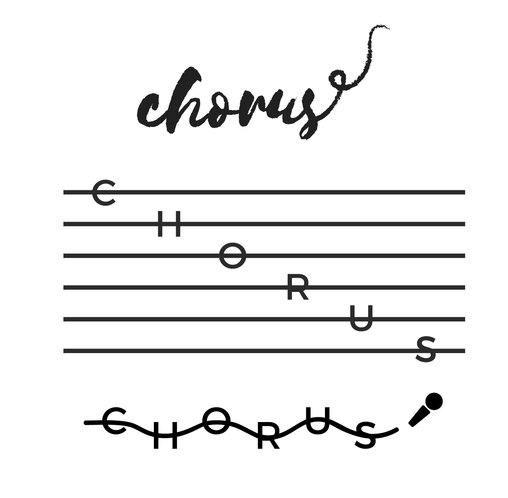
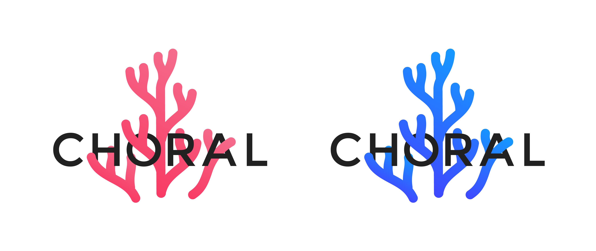
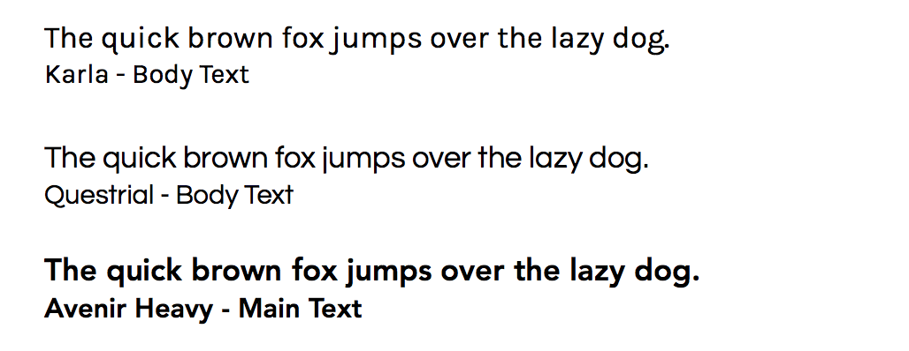
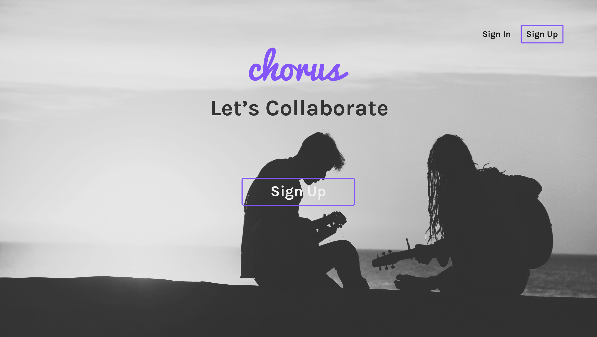
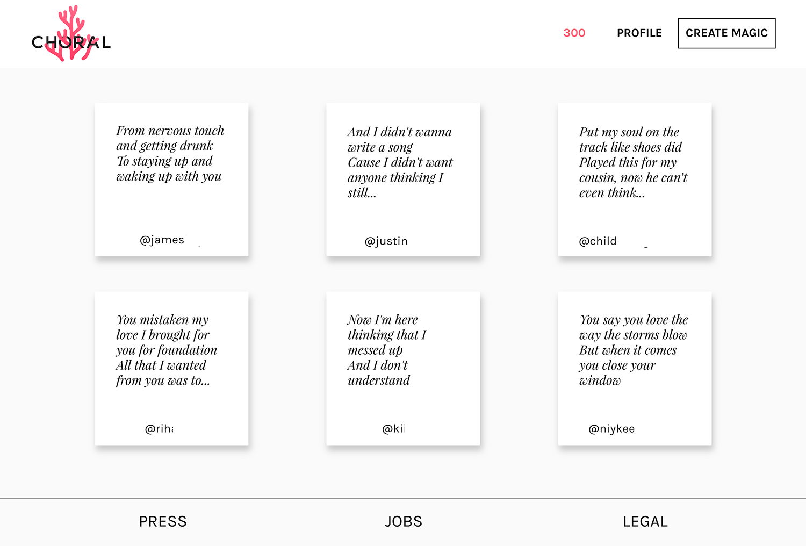

Summary
Intro
Choral was designed as a platform addressing a core need in creative expression. It allows musicians, poets, and other artists to share initial ideas – short lyrics or poetic snippets – to showcase their work. The platform's features, including posting, replies, likes, and follows, are designed to facilitate interaction and feedback, all being key elements in the creative process.
Choral aims to foster a community that inspires and collaboratively develops artistic concepts. I'm particularly drawn to the idea of providing a dedicated space for these initial sparks of creativity. To me, music is universal, meaning this magic is everywhere, and Choral offers a targeted environment for just that. Driven by a music-focused developer, I'm confident in its potential to be a valuable tool for the creative community.
Logo Iterations
My iterative design process often involves exploring multiple directions to get through the bad and get to the good. With logos, in particular, I find the initial exploration phase invaluable, as it leads to a wide range of potential options—it’s fun to see just how far you can go! As you can see from the visuals, the project evolved from the initial concept of 'Chorus' to its final iteration as 'Choral’.
{kind=link}

After "Chorus" turned into "Choral" I decided to play around with the word and create something that both embodied the message of what the application does and keep it fun. I created two different versions and played around with the idea of a "dark" and "light" version.
{kind=link}

Branding
Colors
The primary color palette for Choral's branding has been intentionally designed to evoke a calm and peaceful aesthetic. This palette is versatile for digital applications and allows for adaptable variations across different touchpoints.
The secondary color pallette will be used for the text used in Choral. These colors will act as the base to help set the tone. This pallette can be used for headings, subheadings, and captions, etc.
Typography

Sitemap
{kind=link}
Project Phases
{kind=link}
Desktop v1
Description
Initially, the primary color exploration for Choral leaned towards purple. Throughout the early design phases, I focused on simplicity and ease of use for the core UI elements. This resulted in clean, straightforward forms to create a welcoming user experience. I also decided to utilize a single, uncluttered card view, placing the key actions directly on the card for easy user engagement.
Click on the image to initiate the gallery ↓
{kind=link}

{kind=link}
{kind=link}
{kind=link}
{kind=link}
{kind=link}
Desktop v2
Description:
Version 2 introduced refinements to the card design, including a more stylized typography. To enhance visual clarity, I integrated a brighter aesthetic with an increased use of white space. The card display transitioned to an infinite-scrolling grid layout while maintaining the single-card structure with subtle background darkening for emphasis. This grid presentation is also consistently applied to the user profile, showcasing their individual lyric cards in a unified manner.
Click on the image to initiate the gallery ↓
{kind=link}

{kind=link}
{kind=link}
{kind=link}
{kind=link}